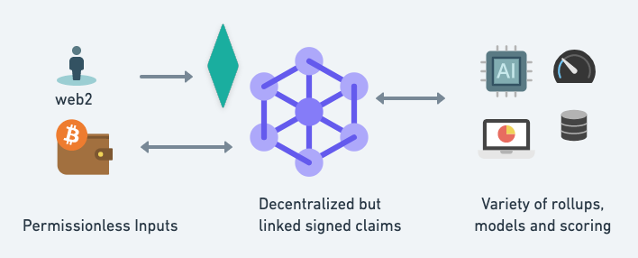

Trust is a primitive. That is, assertions or claims about entities are essential components of any healthy system of interacting entities. Without this capability, bad actors will proliferate: spammers, scammers, hackers, viruses, compromised nodes and decayed or broken endpoints. Weyl, Ohlhaver & Buterin address trust in the wallet-owning crypto ecosystem with Soul-Bound Tokens, or SBTs. This is a promising step.
Self-signed claims can act as a form of SBT but can also be applied to device ids, email addresses, legal corporate entities, product codes, or any other long-lived addressable entity. A common schema for signed trust claims, containing enough information to identify the issuer and the context of the claim, creates a powerful tool for coordination against bad actors - or against any actor. Misuse can be reduced by anchoring each user’s view of the network by their direct connections, and by gathering broad signals across domains.
Ideally, the same schema will support claims about servers, laundry detergent and human rights violations.
A widely used, heterogeneous trust network will be more robust against attack, and will enable important but rare applications.
Key points:
* The granular signed trust claims act like a kafka event stream essentially - immutable stream of signed claims written to some decentralized storage. If Ceramic is used as the data layer, then the updates will be on libp2p. However the important thing is that the trustclaims are published and can be subscribed to in some manner, or at least spidered and scraped (which if the subject is a URI should be easy to do).
* Trust claims can be linked. The issuer of a claim who signs it can also be the subject of a claim. A claim may also be a relationship, ie that two identifiers have common control or are same_as.
* Models aggregate claims. Alternate models can be generated from the same data pool of linked trust claims, and their predictions can be evaluated.
* Aggregators can protect privacy. In many cases the granular claims should not be exposed publicly. However the trust predictions from aggregated claims may be valuable and acceptable to share. Some nodes will therefore have private trust claim data stores but will produce predictive output from a combination of private and public data.
To achieve decentralized, permissionless architecture it is critical that a shared schema be adopted. After discussions and experimentation in the dSocialCommons.org space the following schema is proposed: https://github.com/blueskyCommunity/OpenTrustClaims
# simplest possible conceptual framework
# that fully matches the use cases
# note that reason and source can be lists
issuer : who says
claim:
subject: structured obj, text or did
claim: fixed-vocab-string
object: structured obj, text or did
qualifer: string, (optional)
aspect: fixed-vocab-string (optional)
how_known: thing or array of thing
source: thing or array of thing
effective_date: date
confidence: float, 0..1 (optional)
reviewRating: (can use existing from schema.org, optional)
rating: float, optional
rating_max: float, optional
rating_min: float, optiona
signature:
date_signed:
Token economy: micropayments for predictions and for key/valuable inputs. Free to create assertions but only those subscribed to them will store.
B2B: risk is often outsourced ie to companies such as TechRadar. Generalized risk scores can help small/new companies esp in web3 protect themselves against attackers, spammers and scammers.
Positive advertising: entities identified with positive reputation may be willing to pay for advertising/coupons based on their positive credible reputation scores
...TBD here...
## TBD: ## Related Work ## Applications ### For DAOs ### Decentralized Content Moderation ### Networked Systems --- ## Risk Mitigations ## Driving Adoption
Please contact https://twitter.com/gvelez17 or https://whatscookin.us
Thanks to Harlan Wood and Mark Foster for valuable early feedback and ideas, and to the Bluesky organization for supporting dSocialCommons where these discussions took place.